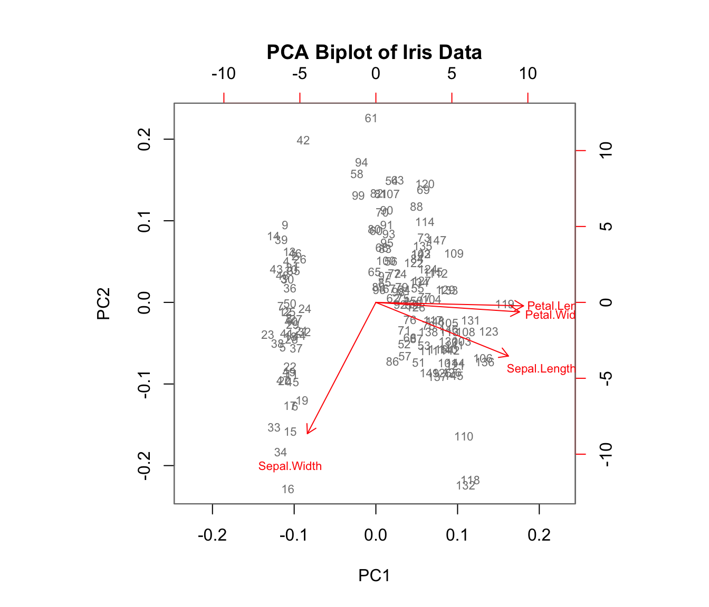
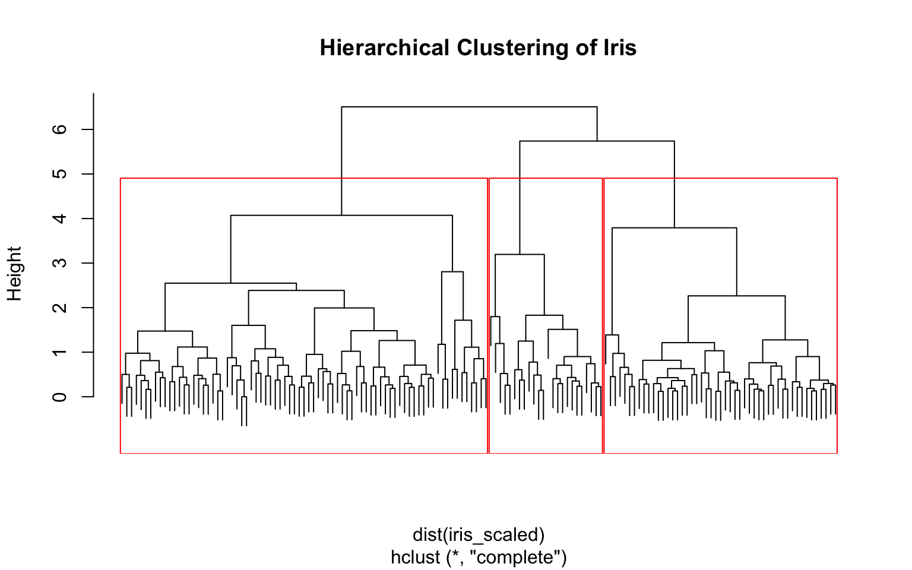

Modern biology generates datasets with many variables: gene expression across thousands of genes, metabolomic profiles with hundreds of compounds, morphological measurements on many traits. When datasets have many variables, visualization becomes impossible and statistical analysis becomes complicated.
Dimensionality reduction creates a smaller set of new variables that capture most of the information in the original data. These techniques help us:
Visualize high-dimensional data in 2D or 3D
Identify patterns and clusters
Remove noise and redundancy
Create composite variables for downstream analysis
24.2 Principal Component Analysis (PCA)
Principal Component Analysis (PCA) is the most widely used dimensionality reduction technique. It finds new variables (principal components) that are linear combinations of the originals, chosen to capture maximum variance.
24.2.1 The Eigenanalysis Foundation
The key insight involves eigenanalysis: decomposing the covariance (or correlation) matrix of variables to find directions of maximum variation.
Given a covariance matrix \(\Sigma\), eigenanalysis finds:
Eigenvectors: The directions of the principal components
Eigenvalues: The variance explained by each component
The first principal component points in the direction of maximum variance. Each subsequent component is orthogonal (uncorrelated) and captures remaining variance in decreasing order.
Large absolute loadings indicate that a variable strongly influences that component. The sign indicates the direction of the relationship.
24.2.4 Interpreting PCA Results
Key elements of PCA output:
Eigenvalues: Variance explained by each component (shown in scree plot)
Proportion of variance: How much of total variance each PC captures
Loadings: Coefficients relating original variables to PCs
Scores: Values of the new variables for each observation
The first few PCs often capture most of the meaningful variation, allowing you to reduce many variables to just 2-3 for visualization and analysis.
How Many Components to Keep?
Common approaches:
Keep components with eigenvalues > 1 (Kaiser criterion)
Keep enough to explain 80-90% of variance
Look for an “elbow” in the scree plot
Use cross-validation if using PCs for prediction
24.2.5 Biplot Visualization
A biplot shows both observations (scores) and variables (loadings) on the same plot:
Code
biplot(iris_pca, col =c("gray50", "red"), cex =0.7,main ="PCA Biplot of Iris Data")

Arrows show variable loadings—their direction and length indicate how each variable relates to the principal components.
24.3 Principal Coordinate Analysis (PCoA)
While PCA uses correlations among variables, Principal Coordinate Analysis (PCoA) (also called Metric Multidimensional Scaling) starts with a dissimilarity matrix among observations. This is valuable when:
You have a meaningful distance metric (e.g., genetic distances)
Variables are mixed types or non-numeric
The data are counts (e.g., microbiome data)
Code
# PCoA example using Euclidean distancesdist_matrix <-dist(iris[, 1:4])pcoa_result <-cmdscale(dist_matrix, k =2, eig =TRUE)# Proportion of variance explainedeig_vals <- pcoa_result$eig[pcoa_result$eig >0]var_explained <- eig_vals /sum(eig_vals)cat("Variance explained by first two axes:",round(sum(var_explained[1:2]) *100, 1), "%\n")
PCA: Variables are measured on a common scale; interested in variable contributions
PCoA: Have a distance matrix; want to preserve distances among samples
For Euclidean distances, PCA and PCoA give equivalent results
24.4 Non-Metric Multidimensional Scaling (NMDS)
NMDS is an ordination technique that preserves rank-order of distances rather than exact distances. It’s widely used in ecology because it makes no assumptions about the data distribution.
Code
# NMDS examplelibrary(vegan)nmds_result <-metaMDS(iris[, 1:4], k =2, trymax =100, trace =FALSE)# Stress value indicates fit (< 0.1 is good, < 0.2 is acceptable)cat("Stress:", round(nmds_result$stress, 3), "\n")
PCA and metric PCoA produce scores on a ratio scale—differences between scores are meaningful. These can be used directly in linear models.
Non-metric multidimensional scaling (NMDS) produces ordinal rankings only. NMDS scores should not be used in parametric analyses like ANOVA or regression.
24.5 Cluster Analysis
Cluster analysis groups observations based on their similarity. Unlike PCA, which creates new continuous variables, clustering assigns observations to discrete groups.
24.5.1 Hierarchical Clustering
Hierarchical clustering builds a tree (dendrogram) of nested clusters. At each step, it either combines the most similar observations/clusters (agglomerative) or splits the most dissimilar (divisive).
Code
# Hierarchical clusteringiris_scaled <-scale(iris[, 1:4])hc <-hclust(dist(iris_scaled), method ="complete")plot(hc, labels =FALSE, main ="Hierarchical Clustering of Iris")rect.hclust(hc, k =3, border ="red")

Different linkage methods define how cluster distances are calculated:
Complete: Maximum distance between points in different clusters
Single: Minimum distance (tends to chain)
Average: Mean distance between all pairs
Ward’s: Minimizes within-cluster variance
24.5.2 K-Means Clustering
K-means partitions data into K groups by minimizing within-cluster variance. It requires specifying K in advance.
Code
set.seed(42)km <-kmeans(iris_scaled, centers =3, nstart =20)# Compare to true speciestable(Cluster = km$cluster, Species = iris$Species)
The nstart parameter runs the algorithm multiple times with different starting points, reducing sensitivity to initialization.
24.5.3 Choosing the Number of Clusters
Several methods help determine the optimal number of clusters:
Code
# Elbow method: look for bend in within-cluster sum of squareswss <-sapply(1:10, function(k) {kmeans(iris_scaled, centers = k, nstart =20)$tot.withinss})par(mfrow =c(1, 2))plot(1:10, wss, type ="b", pch =19,xlab ="Number of Clusters", ylab ="Within-cluster SS",main ="Elbow Method")# Silhouette methodlibrary(cluster)sil_width <-sapply(2:10, function(k) { km <-kmeans(iris_scaled, centers = k, nstart =20)mean(silhouette(km$cluster, dist(iris_scaled))[, "sil_width"])})plot(2:10, sil_width, type ="b", pch =19,xlab ="Number of Clusters", ylab ="Average Silhouette Width",main ="Silhouette Method")
24.6 MANOVA: Multivariate Analysis of Variance
When you have multiple response variables and want to test for group differences, MANOVA (Multivariate Analysis of Variance) is the appropriate technique. It extends ANOVA to multiple dependent variables simultaneously.
24.6.1 Why Not Multiple ANOVAs?
Running separate ANOVAs on each variable:
Ignores correlations among response variables
Inflates Type I error rate with multiple tests
May miss differences only apparent when variables are considered together
MANOVA tests whether group centroids differ in multivariate space.
24.6.2 The MANOVA Framework
MANOVA decomposes the total multivariate variation:
\[\mathbf{T} = \mathbf{H} + \mathbf{E}\]
where:
T: Total sum of squares and cross-products matrix
H: Hypothesis (between-groups) matrix
E: Error (within-groups) matrix
These are matrices because we have multiple response variables.
24.6.3 Test Statistics
Several test statistics exist for MANOVA, each a function of the eigenvalues of \(\mathbf{HE}^{-1}\):
Statistic
Description
Wilks’ Lambda (Λ)
Product of 1/(1+λᵢ); most commonly used
Hotelling-Lawley Trace
Sum of eigenvalues
Pillai’s Trace
Sum of λᵢ/(1+λᵢ); most robust
Roy’s Largest Root
Maximum eigenvalue; most powerful but sensitive
Pillai’s Trace is generally recommended because it’s most robust to violations of assumptions.
24.6.4 MANOVA in R
Code
# MANOVA on iris datamanova_model <-manova(cbind(Sepal.Length, Sepal.Width, Petal.Length, Petal.Width) ~ Species,data = iris)# Summary with different test statisticssummary(manova_model, test ="Pillai")
Df Pillai approx F num Df den Df Pr(>F)
Species 2 1.1919 53.466 8 290 < 2.2e-16 ***
Residuals 147
---
Signif. codes: 0 '***' 0.001 '**' 0.01 '*' 0.05 '.' 0.1 ' ' 1
Code
summary(manova_model, test ="Wilks")
Df Wilks approx F num Df den Df Pr(>F)
Species 2 0.023439 199.15 8 288 < 2.2e-16 ***
Residuals 147
---
Signif. codes: 0 '***' 0.001 '**' 0.01 '*' 0.05 '.' 0.1 ' ' 1
The significant result tells us that species differ in their multivariate centroid—the combination of all four measurements.
24.6.5 Follow-Up Analyses
A significant MANOVA should be followed by:
Univariate ANOVAs to see which variables differ
Discriminant Function Analysis to understand how groups differ
Code
# Univariate follow-upssummary.aov(manova_model)
Response Sepal.Length :
Df Sum Sq Mean Sq F value Pr(>F)
Species 2 63.212 31.606 119.26 < 2.2e-16 ***
Residuals 147 38.956 0.265
---
Signif. codes: 0 '***' 0.001 '**' 0.01 '*' 0.05 '.' 0.1 ' ' 1
Response Sepal.Width :
Df Sum Sq Mean Sq F value Pr(>F)
Species 2 11.345 5.6725 49.16 < 2.2e-16 ***
Residuals 147 16.962 0.1154
---
Signif. codes: 0 '***' 0.001 '**' 0.01 '*' 0.05 '.' 0.1 ' ' 1
Response Petal.Length :
Df Sum Sq Mean Sq F value Pr(>F)
Species 2 437.10 218.551 1180.2 < 2.2e-16 ***
Residuals 147 27.22 0.185
---
Signif. codes: 0 '***' 0.001 '**' 0.01 '*' 0.05 '.' 0.1 ' ' 1
Response Petal.Width :
Df Sum Sq Mean Sq F value Pr(>F)
Species 2 80.413 40.207 960.01 < 2.2e-16 ***
Residuals 147 6.157 0.042
---
Signif. codes: 0 '***' 0.001 '**' 0.01 '*' 0.05 '.' 0.1 ' ' 1
24.6.6 MANOVA Assumptions
MANOVA assumes:
Multivariate normality within groups
Homogeneity of covariance matrices across groups
Independence of observations
No multicollinearity among response variables
Test homogeneity of covariance matrices with Box’s M test (though it’s sensitive to non-normality):
Code
# Box's M test (requires biotools package)# library(biotools)# boxM(iris[, 1:4], iris$Species)
24.7 Discriminant Function Analysis (DFA)
Discriminant Function Analysis (DFA, also called Linear Discriminant Analysis or LDA) finds linear combinations of variables that best separate groups. It complements MANOVA by showing how groups differ.
24.7.1 The Goal of DFA
DFA finds discriminant functions—weighted combinations of original variables—that maximize separation between groups while minimizing variation within groups.
The first discriminant function captures the most separation, the second captures remaining separation orthogonal to the first, and so on.
24.7.2 DFA in R
Code
# Linear Discriminant Analysislda_model <-lda(Species ~ ., data = iris)# View the modellda_model
DFA is valuable for identifying which variables best distinguish groups—useful in biomarker discovery:
Code
# Which variables contribute most to separation?scaling_df <-data.frame(Variable =rownames(lda_model$scaling),LD1 =abs(lda_model$scaling[, 1]),LD2 =abs(lda_model$scaling[, 2]))barplot(scaling_df$LD1, names.arg = scaling_df$Variable,main ="Variable Contributions to LD1",ylab ="Absolute Coefficient",col ="steelblue")
24.8 Comparing Methods
Method
Input
Output
Supervision
Best For
PCA
Variables
Continuous scores
None
Reducing correlated variables
PCoA
Distance matrix
Continuous scores
None
Preserving sample distances
NMDS
Distance matrix
Ordinal scores
None
Ecological community data
Cluster Analysis
Variables or distances
Group assignments
None
Finding natural groupings
MANOVA
Variables + groups
Test statistics
Groups known
Testing group differences
DFA
Variables + groups
Discriminant scores
Groups known
Classifying observations
24.9 Using Ordination Scores in Further Analyses
PC scores and discriminant scores are legitimate new variables that can be used in downstream analysis:
Regression of scores on other continuous variables
ANOVA comparing groups on ordination scores
Correlation of scores with environmental gradients
This is valuable when you have many correlated variables and want to reduce dimensionality before hypothesis testing.
Code
# Use PC scores in ANOVApc_scores <-data.frame(PC1 = iris_pca$x[, 1],PC2 = iris_pca$x[, 2],Species = iris$Species)summary(aov(PC1 ~ Species, data = pc_scores))
Df Sum Sq Mean Sq F value Pr(>F)
Species 2 406.4 203.21 1051 <2e-16 ***
Residuals 147 28.4 0.19
---
Signif. codes: 0 '***' 0.001 '**' 0.01 '*' 0.05 '.' 0.1 ' ' 1
24.10 Practical Workflow
Explore data: Check for outliers, missing values, scaling issues
Standardize if needed: Especially important when variables are on different scales
Choose appropriate method: Based on your data type and question
Validate: Cross-validation for classification; permutation tests for significance
Interpret biologically: What do the patterns mean in your system?
24.11 Summary
Dimensionality reduction creates fewer variables that capture most information
PCA finds linear combinations maximizing variance; useful for correlated variables
PCoA works from distance matrices; useful for ecological and genetic data
Cluster analysis groups similar observations together
MANOVA tests whether groups differ on multiple response variables simultaneously
DFA finds combinations that best discriminate known groups
These methods can be combined: use PCA to reduce dimensions, then cluster or classify
24.12 Additional Resources
James et al. (2023) - Modern treatment of dimensionality reduction and clustering
Logan (2010) - MANOVA and DFA in biological research contexts
Borcard, D., Gillet, F., & Legendre, P. (2018). Numerical Ecology with R - Comprehensive ordination methods
James, Gareth, Daniela Witten, Trevor Hastie, and Robert Tibshirani. 2023. An Introduction to Statistical Learning with Applications in r. 2nd ed. Springer. https://www.statlearning.com.
Logan, Murray. 2010. Biostatistical Design and Analysis Using r. Wiley-Blackwell.
Source Code
# Dimensionality Reduction and Multivariate Methods {#sec-dimensionality-reduction}```{r}#| echo: false#| message: falselibrary(tidyverse)library(MASS)theme_set(theme_minimal())```## The Challenge of High-Dimensional DataModern biology generates datasets with many variables: gene expression across thousands of genes, metabolomic profiles with hundreds of compounds, morphological measurements on many traits. When datasets have many variables, visualization becomes impossible and statistical analysis becomes complicated.**Dimensionality reduction** creates a smaller set of new variables that capture most of the information in the original data. These techniques help us:- Visualize high-dimensional data in 2D or 3D- Identify patterns and clusters- Remove noise and redundancy- Create composite variables for downstream analysis## Principal Component Analysis (PCA)**Principal Component Analysis (PCA)** is the most widely used dimensionality reduction technique. It finds new variables (principal components) that are linear combinations of the originals, chosen to capture maximum variance.### The Eigenanalysis FoundationThe key insight involves **eigenanalysis**: decomposing the covariance (or correlation) matrix of variables to find directions of maximum variation.Given a covariance matrix $\Sigma$, eigenanalysis finds:- **Eigenvectors**: The directions of the principal components- **Eigenvalues**: The variance explained by each componentThe first principal component points in the direction of maximum variance. Each subsequent component is orthogonal (uncorrelated) and captures remaining variance in decreasing order.{fig-align="center"}### PCA in R```{r}#| fig-width: 8#| fig-height: 6# PCA on iris datairis_pca <-prcomp(iris[, 1:4], scale. =TRUE)# Variance explainedsummary(iris_pca)# Scree plotpar(mfrow =c(1, 2))plot(iris_pca, type ="l", main ="Scree Plot")# PC scores colored by speciesplot(iris_pca$x[, 1:2],col =c("red", "green", "blue")[iris$Species],pch =19, xlab ="PC1", ylab ="PC2",main ="PCA of Iris Data")legend("topright", levels(iris$Species),col =c("red", "green", "blue"), pch =19)```### Loadings: What Variables Drive Each PC?Each principal component is defined by its **loadings**—the coefficients showing how much each original variable contributes:```{r}# Loadings (rotation matrix)iris_pca$rotation```Large absolute loadings indicate that a variable strongly influences that component. The sign indicates the direction of the relationship.### Interpreting PCA ResultsKey elements of PCA output:- **Eigenvalues**: Variance explained by each component (shown in scree plot)- **Proportion of variance**: How much of total variance each PC captures- **Loadings**: Coefficients relating original variables to PCs- **Scores**: Values of the new variables for each observationThe first few PCs often capture most of the meaningful variation, allowing you to reduce many variables to just 2-3 for visualization and analysis.::: {.callout-tip}## How Many Components to Keep?Common approaches:- Keep components with eigenvalues > 1 (Kaiser criterion)- Keep enough to explain 80-90% of variance- Look for an "elbow" in the scree plot- Use cross-validation if using PCs for prediction:::### Biplot VisualizationA **biplot** shows both observations (scores) and variables (loadings) on the same plot:```{r}#| fig-width: 7#| fig-height: 6biplot(iris_pca, col =c("gray50", "red"), cex =0.7,main ="PCA Biplot of Iris Data")```Arrows show variable loadings—their direction and length indicate how each variable relates to the principal components.## Principal Coordinate Analysis (PCoA)While PCA uses correlations among variables, **Principal Coordinate Analysis (PCoA)** (also called Metric Multidimensional Scaling) starts with a dissimilarity matrix among observations. This is valuable when:- You have a meaningful distance metric (e.g., genetic distances)- Variables are mixed types or non-numeric- The data are counts (e.g., microbiome data)```{r}#| fig-width: 7#| fig-height: 5# PCoA example using Euclidean distancesdist_matrix <-dist(iris[, 1:4])pcoa_result <-cmdscale(dist_matrix, k =2, eig =TRUE)# Proportion of variance explainedeig_vals <- pcoa_result$eig[pcoa_result$eig >0]var_explained <- eig_vals /sum(eig_vals)cat("Variance explained by first two axes:",round(sum(var_explained[1:2]) *100, 1), "%\n")# Plotplot(pcoa_result$points,col =c("red", "green", "blue")[iris$Species],pch =19,xlab =paste0("PCoA1 (", round(var_explained[1]*100, 1), "%)"),ylab =paste0("PCoA2 (", round(var_explained[2]*100, 1), "%)"),main ="PCoA of Iris Data")legend("topright", levels(iris$Species),col =c("red", "green", "blue"), pch =19)```### When to Use PCoA vs. PCA- **PCA**: Variables are measured on a common scale; interested in variable contributions- **PCoA**: Have a distance matrix; want to preserve distances among samples- For Euclidean distances, PCA and PCoA give equivalent results## Non-Metric Multidimensional Scaling (NMDS)**NMDS** is an ordination technique that preserves rank-order of distances rather than exact distances. It's widely used in ecology because it makes no assumptions about the data distribution.```{r}#| fig-width: 7#| fig-height: 5#| message: false# NMDS examplelibrary(vegan)nmds_result <-metaMDS(iris[, 1:4], k =2, trymax =100, trace =FALSE)# Stress value indicates fit (< 0.1 is good, < 0.2 is acceptable)cat("Stress:", round(nmds_result$stress, 3), "\n")plot(nmds_result$points,col =c("red", "green", "blue")[iris$Species],pch =19, xlab ="NMDS1", ylab ="NMDS2",main ="NMDS of Iris Data")legend("topright", levels(iris$Species),col =c("red", "green", "blue"), pch =19)```::: {.callout-warning}## Metric vs. Non-Metric MethodsPCA and metric PCoA produce scores on a ratio scale—differences between scores are meaningful. These can be used directly in linear models.Non-metric multidimensional scaling (NMDS) produces ordinal rankings only. NMDS scores should **not** be used in parametric analyses like ANOVA or regression.:::## Cluster Analysis**Cluster analysis** groups observations based on their similarity. Unlike PCA, which creates new continuous variables, clustering assigns observations to discrete groups.### Hierarchical Clustering**Hierarchical clustering** builds a tree (dendrogram) of nested clusters. At each step, it either combines the most similar observations/clusters (agglomerative) or splits the most dissimilar (divisive).```{r}#| fig-width: 8#| fig-height: 5# Hierarchical clusteringiris_scaled <-scale(iris[, 1:4])hc <-hclust(dist(iris_scaled), method ="complete")plot(hc, labels =FALSE, main ="Hierarchical Clustering of Iris")rect.hclust(hc, k =3, border ="red")```Different **linkage methods** define how cluster distances are calculated:- **Complete**: Maximum distance between points in different clusters- **Single**: Minimum distance (tends to chain)- **Average**: Mean distance between all pairs- **Ward's**: Minimizes within-cluster variance### K-Means Clustering**K-means** partitions data into K groups by minimizing within-cluster variance. It requires specifying K in advance.```{r}set.seed(42)km <-kmeans(iris_scaled, centers =3, nstart =20)# Compare to true speciestable(Cluster = km$cluster, Species = iris$Species)```The `nstart` parameter runs the algorithm multiple times with different starting points, reducing sensitivity to initialization.### Choosing the Number of ClustersSeveral methods help determine the optimal number of clusters:```{r}#| fig-width: 8#| fig-height: 4# Elbow method: look for bend in within-cluster sum of squareswss <-sapply(1:10, function(k) {kmeans(iris_scaled, centers = k, nstart =20)$tot.withinss})par(mfrow =c(1, 2))plot(1:10, wss, type ="b", pch =19,xlab ="Number of Clusters", ylab ="Within-cluster SS",main ="Elbow Method")# Silhouette methodlibrary(cluster)sil_width <-sapply(2:10, function(k) { km <-kmeans(iris_scaled, centers = k, nstart =20)mean(silhouette(km$cluster, dist(iris_scaled))[, "sil_width"])})plot(2:10, sil_width, type ="b", pch =19,xlab ="Number of Clusters", ylab ="Average Silhouette Width",main ="Silhouette Method")```## MANOVA: Multivariate Analysis of VarianceWhen you have multiple response variables and want to test for group differences, **MANOVA** (Multivariate Analysis of Variance) is the appropriate technique. It extends ANOVA to multiple dependent variables simultaneously.### Why Not Multiple ANOVAs?Running separate ANOVAs on each variable:- Ignores correlations among response variables- Inflates Type I error rate with multiple tests- May miss differences only apparent when variables are considered togetherMANOVA tests whether group centroids differ in multivariate space.### The MANOVA FrameworkMANOVA decomposes the total multivariate variation:$$\mathbf{T} = \mathbf{H} + \mathbf{E}$$where:- **T**: Total sum of squares and cross-products matrix- **H**: Hypothesis (between-groups) matrix- **E**: Error (within-groups) matrixThese are matrices because we have multiple response variables.{fig-align="center"}### Test StatisticsSeveral test statistics exist for MANOVA, each a function of the eigenvalues of $\mathbf{HE}^{-1}$:| Statistic | Description ||:----------|:------------|| **Wilks' Lambda (Λ)** | Product of 1/(1+λᵢ); most commonly used || **Hotelling-Lawley Trace** | Sum of eigenvalues || **Pillai's Trace** | Sum of λᵢ/(1+λᵢ); most robust || **Roy's Largest Root** | Maximum eigenvalue; most powerful but sensitive |**Pillai's Trace** is generally recommended because it's most robust to violations of assumptions.### MANOVA in R```{r}# MANOVA on iris datamanova_model <-manova(cbind(Sepal.Length, Sepal.Width, Petal.Length, Petal.Width) ~ Species,data = iris)# Summary with different test statisticssummary(manova_model, test ="Pillai")summary(manova_model, test ="Wilks")```The significant result tells us that species differ in their multivariate centroid—the combination of all four measurements.### Follow-Up AnalysesA significant MANOVA should be followed by:1. **Univariate ANOVAs** to see which variables differ2. **Discriminant Function Analysis** to understand how groups differ```{r}# Univariate follow-upssummary.aov(manova_model)```### MANOVA AssumptionsMANOVA assumes:1. **Multivariate normality** within groups2. **Homogeneity of covariance matrices** across groups3. **Independence** of observations4. **No multicollinearity** among response variablesTest homogeneity of covariance matrices with Box's M test (though it's sensitive to non-normality):```{r}#| eval: false# Box's M test (requires biotools package)# library(biotools)# boxM(iris[, 1:4], iris$Species)```## Discriminant Function Analysis (DFA)**Discriminant Function Analysis** (DFA, also called Linear Discriminant Analysis or LDA) finds linear combinations of variables that best separate groups. It complements MANOVA by showing *how* groups differ.### The Goal of DFADFA finds discriminant functions—weighted combinations of original variables—that maximize separation between groups while minimizing variation within groups.The first discriminant function captures the most separation, the second captures remaining separation orthogonal to the first, and so on.{fig-align="center"}### DFA in R```{r}#| fig-width: 7#| fig-height: 5# Linear Discriminant Analysislda_model <-lda(Species ~ ., data = iris)# View the modellda_model# Discriminant scoreslda_scores <-predict(lda_model)$x# Plotplot(lda_scores,col =c("red", "green", "blue")[iris$Species],pch =19,main ="Discriminant Function Scores",xlab ="LD1", ylab ="LD2")legend("topright", levels(iris$Species),col =c("red", "green", "blue"), pch =19)```### Interpreting DFA OutputKey components:- **Coefficients of linear discriminants**: Weights for creating discriminant scores- **Proportion of trace**: Variance explained by each discriminant function- **Group means**: Average score on each discriminant function for each group```{r}# Coefficients (loadings)lda_model$scaling# Proportion of separation explainedlda_model$svd^2/sum(lda_model$svd^2)```### Using DFA for PredictionDFA can classify new observations into groups based on their discriminant scores:```{r}# Classification accuracypredictions <-predict(lda_model)$classtable(Predicted = predictions, Actual = iris$Species)# Classification accuracymean(predictions == iris$Species)```### Cross-Validated ClassificationFor honest estimates of classification accuracy, use leave-one-out cross-validation:```{r}# Cross-validated LDAlda_cv <-lda(Species ~ ., data = iris, CV =TRUE)# Cross-validated classification tabletable(Predicted = lda_cv$class, Actual = iris$Species)# Cross-validated accuracymean(lda_cv$class == iris$Species)```### DFA for Biomarker DiscoveryDFA is valuable for identifying which variables best distinguish groups—useful in biomarker discovery:```{r}#| fig-width: 7#| fig-height: 5# Which variables contribute most to separation?scaling_df <-data.frame(Variable =rownames(lda_model$scaling),LD1 =abs(lda_model$scaling[, 1]),LD2 =abs(lda_model$scaling[, 2]))barplot(scaling_df$LD1, names.arg = scaling_df$Variable,main ="Variable Contributions to LD1",ylab ="Absolute Coefficient",col ="steelblue")```## Comparing Methods| Method | Input | Output | Supervision | Best For ||:-------|:------|:-------|:------------|:---------|| PCA | Variables | Continuous scores | None | Reducing correlated variables || PCoA | Distance matrix | Continuous scores | None | Preserving sample distances || NMDS | Distance matrix | Ordinal scores | None | Ecological community data || Cluster Analysis | Variables or distances | Group assignments | None | Finding natural groupings || MANOVA | Variables + groups | Test statistics | Groups known | Testing group differences || DFA | Variables + groups | Discriminant scores | Groups known | Classifying observations |## Using Ordination Scores in Further AnalysesPC scores and discriminant scores are legitimate new variables that can be used in downstream analysis:- Regression of scores on other continuous variables- ANOVA comparing groups on ordination scores- Correlation of scores with environmental gradientsThis is valuable when you have many correlated variables and want to reduce dimensionality before hypothesis testing.```{r}# Use PC scores in ANOVApc_scores <-data.frame(PC1 = iris_pca$x[, 1],PC2 = iris_pca$x[, 2],Species = iris$Species)summary(aov(PC1 ~ Species, data = pc_scores))```## Practical Workflow1. **Explore data**: Check for outliers, missing values, scaling issues2. **Standardize if needed**: Especially important when variables are on different scales3. **Choose appropriate method**: Based on your data type and question4. **Examine output**: Scree plots, loadings, clustering diagnostics5. **Validate**: Cross-validation for classification; permutation tests for significance6. **Interpret biologically**: What do the patterns mean in your system?## Summary- Dimensionality reduction creates fewer variables that capture most information- PCA finds linear combinations maximizing variance; useful for correlated variables- PCoA works from distance matrices; useful for ecological and genetic data- Cluster analysis groups similar observations together- MANOVA tests whether groups differ on multiple response variables simultaneously- DFA finds combinations that best discriminate known groups- These methods can be combined: use PCA to reduce dimensions, then cluster or classify## Additional Resources- @james2023islr - Modern treatment of dimensionality reduction and clustering- @logan2010biostatistical - MANOVA and DFA in biological research contexts- Borcard, D., Gillet, F., & Legendre, P. (2018). *Numerical Ecology with R* - Comprehensive ordination methods